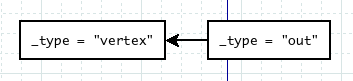

Cayley 是用 golang 实现的基于 triple store 的开源 graph database. Caley 同时支持 Gremlin 和 MQL 的查询方式 . 并且可以支持多个 backend, 比如 LevelDB, Bolt, MongoDB 和 In-Memory Store.
这篇文章主要介绍 In-Memory Store 的方式下 , Cayley 采用 JavaScript/Gremlin 进行查询的过程 , 关注点是分析 In-Memory 方式下的数据结构和查询流程 . 本文只是对 cayley 代码做了基本的描述 , 基本上是对自己阅读过程的一个总结 , 不能保证描述的正确性 , 更不保证内容的完备性 .
TripleStore
graph database 的存储形式有多种 , 而 TripleStore 是其中常见的一种 , Cayley 中的 TripleStore 可以用文本表示为下面的样子 :
1. Alice follows Chester .
2. Alice follows Mike .
3. Mike follows Chester .
TripleStore 数据存储单元被表示成为 Triple, 即三元式 , 在 Cayley 中 , 每一个 Triple 还可以有一个 Label, 因此实际上被实现为 Quad, Quad 由四个部分组成 , 每一个部分被称为一个 node.
Subject: 表示发起动作的一方 , 比如在上面示例的 Quad 1 中 , Alice 是SubjectObject: 表示接受动作的一方 , 比如 Quad 1 中 , Chester 是ObjectPredicate: 表示Subject和Object的关系 , 在 Quad 1 中 ,Predicate是 "follows"Label: 表示整个 Quad 的标签 , 在上面的例子中 , lable 都是 ".", 表示为空 .
Quad 用来表示 Subject 和 Object 之间的 Predicate 关系 . 比如例子中的三个 Quad( 四元式 ), 都是用来表示 Subject 和 Object 之间的 "follows" 关系 .
因为包含了 Label, Cayley 中的 Triple 实际上被扩展成为 Quad, 但为了符合 TripleStore 的语义 , 后面的讨论中仍然会使用 Triple 描述 . 当文中使用到 Triple 或者 Quad 时 , 其实描述的是相同的东西 .
JavaScript/Gremlin
Cayley 支持使用 JavaScript 对数据进行查询 , 并且定义了类似于 Gremlin 的 graph 对象 , 用户可以使用类似 Gremlin 的语言来进行 graph 查询 . Cayley 内部使用了一个称为 otto 的 JavaScript 解释器 , 当用户在 REPL 直接输入 Javascript 语句 , 或者通过 HTTP 发送 JavaScript 请求时 , Cayley 都通过 JavaScript 解释器来解析并执行 JavaScript 代码 , 对 graph database 进行查询 .
otto 是一个 generic 的 JavaScript 解释器 , 本身并不包含 graph database 相关的功能 , Cayley 在 JavaScript 环境中预定义了 graph 对象来引入 graph database 的功能 . graph 是一个特殊的对象 , 所有的 graph database 查询都从 graph 开始 . graph 对象中定义了进行查询的相关方法 , 其中 graph.Vertex() 方法可以返回指定了特定 vertex 的 Path Object, Vertex() 方法可以接受一个或者多个 vertex 的 name 作为参数 . 而该方法实际返回的是一个 Path Object, Path Object 中又定义了 travels methods 来进行进一步的遍历和 finals methods 来返回结果 . 我们可以把 graph 对象中的方法看作用来指定图遍历的起点 . 这样 , 整个遍历过程可以被串联成下面的样子 :
graph.Vertex("Alice").Out("follows").All()
上面的例子会返回 Alice "follows" 的所有 vertex. 这里 , graph.Vertex("Alice") 首先会返回指定了 vertex 为 "Alice" 的 Path Object, 随后的调用的 Out 方法是一个 travels method, Out("follows") 表示从之前返回的 Path Object 开始遍历所有 name 为 "follows" 的 out 路径 , Out 方法同样会返回一个 Path Object, 指向了所有 "Alice" follows 的 vertex. 最后调用的 All 是一个 finals method, 表示返回当前得到的所有 vertex 结果 .
从上面的例子可以看出 JavaScript/Gremlin 的基本语法 :
graphJavaScript 对象引入 graph database 功能 ,graph.Vertex()方法返回表示特定 vertex 的 Path Object.- Path Object 定义了
travels methods和finals methods traverls methods定义了 graph database 的遍历操作 , 在 Path Object 上调用travels methods同样返回 Path Object. 比如上面的Out()方法 .finals methods最终返回遍历的结果 . 比如上面的All()方法 .
Memory TripleStore
Cayley 支持多种数据存储的后端 , 包括 : - LevelDB - Bolt - MongoDB - In-Memory, ephemeral
这里 , 我们只介绍 In-Memory 的存储方式 .
在 Cayley 中 , In-Memory 的 TripleStore 定义为下面的样子 :
type TripleStore struct {
idCounter int64
tripleIdCounter int64
idMap map[string]int64
revIdMap map[int64]string
triples []quad.Quad
size int64
index TripleDirectionIndex
}
- Cayley 会为在 TripleStore 中的每一个 Triple 赋值一个 tripleId, 而 triple 中的每一个 node, 都会被设置一个 nodeId. 这两个 Id 都是唯一的 .
TripleStore结构中的idCounter和tripeIdCounter记录了 tripleId 和 nodeId 的最大值 , 用来为下一个 triple 和 node 进行 id 分配 . idMap是从 node name 到 nodeId 的映射 . 可以用于通过 node name 来查找 nodeId, 比如上面的例子中 , 我们可以简单的通过idMap来找到 "Alice" 对应的 nodeId.revIdMap是从 nodeId 到 node name 的映射 .triples存储了所有的 triple. triples 实际上是quad.Qaud的 slice 类型 .size存储了 TripleStore 中的 triple 的数量index是遍历 TripleStore 的关键 , 它存储了每一个 node 在 TripleStore 中的 index. 下面会详细介绍这个 TripleDirectionIndex.
TripleDirectionIndex
TripleDirectionIndex 的定义如下 :
type TripleDirectionIndex struct {
subject map[int64]*llrb.LLRB
predicate map[int64]*llrb.LLRB
object map[int64]*llrb.LLRB
label map[int64]*llrb.LLRB
}
TripleDirecitonIndex 中包含了 4 个 map, 针对 triple 中的 Subject, Object, Predicate 和 Label 四种 node 各有一个 . map 的 key 是 nodeId, 而 value 则是一个红黑数 . 其中保存了包含了该 node 的所有 triple. 这样当我们拿到一个 node 时 , 可以很方便的通过下面的两步操作来找到所有包含这个 node 的 triple.
- 首先 , 根据 node 的类型 , 获取到存储 LLRB 的 map
- 然后使用 node 的 id 为 key, 从 map 中获取存储了 triple 的 LLRB.
TripleDirectionIndex 实际上定义了从 (direction, node) 到 triple 的映射 . 它在 graph database 查询中起到很重要的作用 .
Graph Database 查询
graph database 的查询都是从 graph 对象开始 , 比如下面的列子 :
graph.Vertex("Alice").Out("follows").All()
Cayley 使用了 lazy 的方式来实现查询过程 , 整个过程被分为两步 :
- 当调用
graph.Vertex()和travels methods的时候 , cayley 实际上是在构造 Path Object. - 当执行到
finals methods方法的时候 , Cayley 开始构建 iterator, 并且调用iterator.next()来获取遍历结果 . 这保证了只有在执行到finals methods的时候 , 才会真正执行遍历操作 .
Path Object 记录了查询语句的结果 , 而 iterator 则是将 Path Object 翻译更贴近查询过程的形式 . 一个 Path Object 可能会被转换城一个或者多个 iterator. 每一个 iterator 都会包含 next() 方法用来返回查询的下一个结果 , 而多个 iterator 链接起来 , 完成整个查询过程 . 下面会介绍几种示例中涉及到的 iterator. 然后介绍示例的查询过程 .
Fixed Iterator
Fixed Iterator 中包含数组 values 存储指定的 node, 调用 Fixed.next() 会按序返回数组中的 node. 更详细一点 , Fixed 中包含了下面的成员 :
type Fixed struct {
values []graph.Value
lastIndex int
... ...
}
其中 , values 保存了所有的可能会返回的 node, lastIndex 保存了下一个返回值的 index, 每一次 next() 方法被调用之后 , lastIndex 会被加 1, 直到 lastIndex == len(values).
LinksTo Iterator
LinksTo 中包含了下面的一些成员 :
type LinksTo struct {
ts graph.TripleStore
primaryIt graph.Iterator
dir quad.Direction
nextIt grpah.Iterator
result graph.Value
}
当构造 LinksTo 的时候 , 需要传入三个参数 ::
func NewLinksTo(ts graph.TripleStore, primaryIt graph.Iterator, dir quad.Direction)
LinksTo.next() 方法会返回 TripleStore 中所有包含了 primaryIt 中的 node 的 triple. next() 会做下面的操作 :
- 从
primaryIt中拿到下一个node - 根据
node和dir从 TripleStore 中拿到triple.direciton = node的 triple. 这个操作是通过 TripleStore 的 TripleDirectionIndex 来完成的 .
比如如果我们想拿到所有 Subject 为 "Alice" 的 triple, 我们可以用下面的语句来构造一个 LinksTo iterator:
linksTo := NewLinksTo(ts, NewFixed("Alice"), quad.Subject)
And Iterator
And Iterator 表示多个 iterator 之间的 and 关系 , 其中包含下面的关键成员 :
type And struct {
internalIterators []graph.Iterator
itcount int
primaryIt graph.Iterator
result graph.Value
}
在 And Iterator 的 next() 方法中 , 首先会从 pimaryIt 中获取 next() 方法的结果 , 随后会循环对 internalIterators 中的 iterator 调用 contains() 来确认刚刚返回的 next 结果是否在所有的 iterator 中 . 从这里可以看出来 , primaryIt 和 iternalIterators 之间是 AND 的关系 .
HasA Iterator
Has Iterator 是一个从 triple 到 node 的 iterator, 其中包含下面的关键成员 :
type HasA struct {
ts graph.TripleStore
primaryIt graph.Iterator
dir graph.Direction
resultIt graph.Iterator
result graph.Value
}
Has Iterator 的 next() 方法获取 primaryIt 中的下一个 triple, 然后返回该 triple 在 direction=dir 上的 node.
Graph Database 查询实例
根据上面的 graph iterator 介绍 , 我们可以来看一个具体的示例来看一下 iterator 的创建和查询过程 .
graph.Vertex("Alice").Out("follows").All()
根据前面的描述 , 可以把上面的示例转换为下面的样子 :
function query() {
var vertexes = graph.Vertex("Alice");
var pathObj1 = vertexes.Out("follows");
pathObj.All();
}
前面提到 , cayley 只有在调用了 finals methods 的时候 , 才会进行 iterator 的构建和对 next() 方法的调用 .
在 pathObj.All() 被调用时 , 会进行下面的两个步骤 :
- 根据返回的 Path Object 来创建 iterator tree. Path Object 会通过其中的 _gremlin_prev 成员来记录前一个 Path Object 的引用 . 这里 Cayley 会反向遍历 Path Object, 将 Path Object 转化为更贴近 graph database 查询过程的 iteartor
- 对 iterator tree 进行遍历 , 调用其 next() 方法来查询 graph database.
当调用了 graph.Vertex("Alice").Out("follows") 之后 , 实际上会返回一个 Path Object, 为下图的样子 :

- Path Object 包含了
_gremlin_type字段来标示类型 , 后面会根据不同的类型进行不同的处理 - Path Object 中包含了
_gremlin_prev字段来指向前一个Path Object. 因为是采用 lazy 的方式进行处理 , 因此需要记录整个 Path Object 的构建路径 , 后面进行iterator tree构造时 , 一般都会采用递归的方式处理整个 Path Object 链表 .
buildIteratorTree() 会采用递归的方式处理 Path Object 链表 . 并根据不同的 _gremlin_type 进行不同的处理 . 在上面的例子 , 其中包括了两种 vertex 和 out 两种 object, 类型为 vertex 的 object 处理比较简单 , buildIteartorTree() 会返回一个 Fixed Iterator, 其中 Fixed.values 为 Vertex() 方法指定的 vertex, 在示例中是 vertex "Alice". 而 out 类型的 object 处理比较复杂 .
Build Out Iterator
当类型为 out 时 , 处理会稍微复杂 . 结合上面的实例 , 这个过程可以用下面的代码来表示 :
func buildOutIterator(obj, ts, base) {
subjectLinks := NewLinksTo(ts = ts, primaryIt = base, dir = quad.Subject)
predicateIterator := NewFixed(values = ["follows"])
predicateLinks := NewLinksTo(ts = ts, primaryIt = predicateIterator, dir = quad.Predicate)
andIter := NewAnd(internalIterators = [predicateLinks], primaryIt = subjectLinks)
return NewHasA(ts = ts, primaryIt = andIter, dir = quad.Object)
}
graph.Vertex("Alice").out("folows").All() 实际上返回的是所有 "Alice" follows 的 vertex, cayley 把这个关系表示成多个 iterator. 这里参数 base 是之前的 Path Object, 在这里是类型为 vertex 的 object.
- 首先 , subjectLinks 用来查找到所有 Subject 为 "Alice" 的 triple.
- 其次 , predicateLinks 用来查找到所有 Predicate 为 "follows" 的 triple.
- 上面的两个 iterator 通过 And iterator 进行组合 , 找到所有 (Subject = "Alice", Predicate = "follows") 的 triple
- 最后通过 HasA iterator 返回上面找到所有 triple 的 Object, 完成所需要的查询 .
In-Memory Backend 的查询
根据上面的叙述 , graph database 查询过程被表示为不同的 iterator. 而实际上 , 在上面的例子中 , 只有在做第一次 LinksTo. 的查询是才需要访问 In-Memory Backend. 这是需要的操作是拿到所有 Subject 为 Alice 的 triple. 这个操作可以通过 `TripleStore.TripleDirectionIndex 进行查询 . 当拿到这个 iterator 之后 , 后面的操作都可以直接在这个 iterator 上进行操作 , 而不需要再次访问 In-Memory Backend.
总结
Cayley 支持 lazy 的方式进行 graph database 的查询 , 并且支持了多种 Backend, 因此代码比较复杂 . 本文只挑选了一个简单的例子进行描述 , 并介绍了例子可能涉及到的一些概念和实现细节 . 如果回到查询这个根本问题 , 当排除了 Path Object 和 iterator 这些为扩展性和灵活性而设计的结构之后 , 可以看出 Cayley 中基本上就是依靠 TripleDirectionIndex 进行 graph database 的查询 .